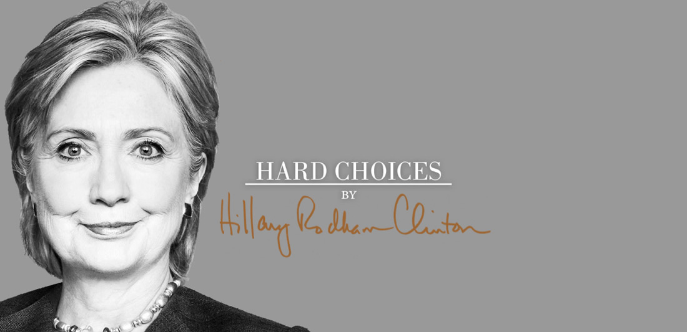

LỜI TÁC GIẢ

ính tặng các nhà ngoại giao và các chuyên gia phát triển của Hoa Kỳ, những người đại diện cho đất nước đã làm hết sức mình bảo vệ những giá trị tốt đẹp của chúng ta ở những vùng đất rộng lớn hay nhỏ bé, yên bình hay hiểm nguy trên thế giới.
Và
Để tưởng nhớ song thân tôi:
Hugh Ellsworth Rodham (1911-1993)
Dorothy Emma Howell Rodham (1919-2011)
LỜI TÁC GIẢ
Tất cả chúng ta phải đối mặt với những lựa chọn khó khăn trong cuộc sống, đôi khi phải đối mặt với thực tế khó khăn nhiều hơn sự chia sẻ. Chúng ta phải tự điều chỉnh sự cân bằng giữa yêu cầu của công việc và gia đình. Chăm sóc cho đứa con thơ ốm yếu hay bố mẹ già nua. Tìm mọi cách kiếm tiền để đi học đại học. Tìm một công việc tốt và phải biết tồn tại nếu ta thất nghiệp. Cũng như khi nào nên kết hôn hay sống đơn thân và làm sao giữ được hạnh phúc gia đình nếu ta kết hôn. Làm thế nào để đem lại cho con cái chúng ta có những cơ hội mà chúng ước mơ sẽ trở thành sự thật. Cuộc sống quanh ta là những lựa chọn. Các lựa chọn và cách xử lý tạo nên con người riêng trong mỗi chúng ta. Với các nhà lãnh đạo quốc gia, điều đó có thể tạo nên chiến tranh hay hòa bình, nghèo đói hay thịnh vượng.

Tôi biết ơn đời vì tôi sinh ra trong tình thương yêu vô bờ bến của cha mẹ, được hỗ trợ trong một đất nước tạo cho tôi mọi cơ hội và may mắn - những yếu tố ngoài tầm kiểm soát chính là sự chuẩn bị cho cuộc sống mà tôi ở cương vị lãnh đạo và các giá trị cũng như đức tin tôi đã chấp nhận. Khi tôi chọn sự nghiệp làm một luật sư trẻ tuổi ở Washington rồi chuyển đến Arkansas, kết hôn với Bill và bắt đầu cuộc sống gia đình, bạn bè của tôi hỏi "cậu có điên không đấy?" Tôi cũng nghe những câu hỏi tương tự khi tham gia cải cách y tế với tư cách Đệ nhất phu nhân, tự điều hành văn phòng và chấp nhận đề nghị của Tổng thống Barack Obama làm Ngoại trưởng Hoa Kỳ.
Trong việc đưa ra những quyết định này, tôi lắng nghe cả tiếng gọi con tim lẫn toan tính. Làm theo tiếng gọi trái tim khi tôi đến Arkansas và tình yêu thêm mặn nồng khi đứa con gái, Chelsea, chúng tôi ra đời; cùng nỗi đau nhói trong tim khi song thân tôi tạ thế. Ý chí thúc giục tôi hướng về phía trước trong học tập và lựa chọn nghề nghiệp. Con tim và lý trí đưa tôi vào việc phục vụ công chúng. Trên đường đời tôi quyết không tái phạm những sai lầm đã mắc phải, cố gắng học hỏi, thích nghi và cầu nguyện có sự khôn ngoan để tìm được những lựa chọn tốt hơn trong tương lai.
Cuộc sống xảy ra hàng ngày của chúng ta cũng giống với các nhà lãnh đạo tối cao của chính phủ. Việc duy trì an toàn, thịnh vượng và quyền lực của nước Mỹ đòi hỏi vô số sự lựa chọn, ảnh hưởng vì thiếu thông tin và các khẳng định trái ngược nhau. Có thể lấy ví dụ nổi bật nhất trong 4 năm làm Ngoại trưởng là quyết định của Tổng thống Obama gửi một đội Đặc nhiệm Hải quân vào Pakistan trong đêm không có trăng để bắt Osama bin Laden. Các cố vấn hàng đầu của Tổng thống có sự chia rẽ. Các thông tin tình báo có vẻ rất khả quan, nhưng không đảm bảo chắc chắn. Khả năng thất bại rất cao, nếu thất bại sẽ ảnh hưởng đến an ninh quốc gia, cuộc chiến với al-Qaeda và quan hệ với Pakistan là rất lớn. Nhưng trên hết, đó là tính mạng của những người lính đặc nhiệm dũng cảm đang ngàn cân treo sợ tóc. Đó là quyết định dũng cảm nhất của nhà lãnh đạo mà tôi từng thấy.
Cuốn sách này viết về những lựa chọn tôi đã thực hiện khi làm Ngoại trưởng, cũng như của Tổng thống Obama và các nhà lãnh đạo khác trên thế giới. Một số chương trong sách viết về những sự kiện nổi bật; những chương khác đề cập đến những xu hướng định hình trong tương lai.
Tất nhiên, một vài sự lựa chọn quan trọng, tính cách các nhà lãnh đạo, quốc gia và một số sự kiện không được đề cập trong cuốn sách này. Để cung cấp cho độc giả tất cả vấn đề họ xứng đáng được biết, tôi cần viết thêm nhiều. Hoàn thành cuốn sách ngoài sự giúp đỡ của các đồng nghiệp tài năng, tận tâm mà còn được những người trong Bộ Ngoại giao nhiệt tình chia sẻ. Tôi rất biết ơn về sự giúp đỡ và tình bạn của mọi người.
Là Ngoại trưởng, sự lựa chọn và thách thức của tôi thường chia ra ba loại: Các vấn đề tồn đọng, (bao gồm hai cuộc chiến tranh và khủng hoảng tài chính toàn cầu); Các nguy cơ mới nổi và những sự kiện không lường trước (bất ổn ở Trung Đông, căng thẳng vùng biển Thái Bình Dương, hay lỗ hổng an ninh mạng… ) và các cơ hội được tạo ra bởi thế giới ngày càng gắn kết, với tiềm năng tạo ra sự thịnh vượng và vị thế lãnh đạo của Hoa Kỳ trong thế kỷ XXI.
Tôi tiếp cận công việc với sự tự tin sức mạnh lâu dài và mục đích của Hoa Kỳ cùng sự yếu kém của nhiều nước khác nằm ngoài tầm hiểu biết và kiểm soát của chúng ta. Tôi cố gắng định hướng lại chính sách đối ngoại của Hoa Kỳ xung quanh cái mà tôi gọi là "sức mạnh thông minh". Để thành công trong thế kỷ XXI, chúng ta cần phải kết hợp các công cụ truyền thống của chính sách đối ngoại – (ngoại giao, viện trợ phát triển, và lực lượng quân sự) - đồng thời kích thích nguồn lực và ý tưởng của khu vực tư nhân, trao sức mạnh cho công dân để họ đối mặt với thử thách và quyết định tương laic ho chính họ. Chúng ta phải tận dụng tất cả các sức mạnh của Hoa Kỳ, xây dựng một thế giới nhiều đối tác hơn đối thủ, chia sẻ trách nhiệm chung nhiều hơn và xung đột ít hơn, làm nhiều việc tốt hơn, giảm bớt đói nghèo, đem lại thịnh vượng với ít thiệt hại nhất đến môi trường.
Thông thường khi người ta nhìn thấy sự lợi ích thì đã quá muộn, tôi ước gì có thể quay ngược thời gian về lúc khởi đầu để kiếm soát lại những gì đã lựa chọn. Nhưng dù sao tôi cũng rất tự hào và hài lòng sự lựa chọn của tôi.
Thế kỷ này bắt đầu với thảm họa cho đất nước của chúng ta: vụ tấn công ngày 9-11, cuộc chiến chống khủng bố và cuộc khủng hoảng kinh tế 2008. Chúng ta phải làm tốt hơn và tôi tin chúng ta sẽ làm được.
Những năm qua là một cuộc hành trình dài hơi, theo cả nghĩa đen (tôi đã chính thức thăm 112 quốc gia với đoạn đường gần một triệu dặm) và nghĩa bóng, từ khi thất bại đau buồn của cuộc chạy đua năm 2008 đến quan hệ đối tác bất ngờ và mối quan hệ tình bạn với đối thủ cũ, Barack Obama. Tôi đã phục vụ tổ quốc bằng nhiều cách trong nhiều thập niên. Tuy vậy, những năm làm Ngoại trưởng, tôi đã rút ra được nhiếu bài học quý báu về điểm mạnh và yếu dẫn đến sự cạnh tranh và phát triển trong và ngoài nước.
Tôi hy vọng cuốn sách này có ích với bất cứ ai muốn biết những gì về vị trí của Hoa Kỳ trong những năm đầu của thế kỷ XXI, cũng như chính quyền Obama phải đối mặt với những thách thức lớn lao trong một thời gian dài đầy gian khó.
Quan điểm và kinh nghiệm của tôi chắc chắn sẽ được soi xét kỹ lưỡng bởi những người kế tục trên sân khấu chính trị của chính quyền Washington - những người nắm quyền và những người chống đối, những người đã được lên xe và cả những người đã ngã ngựa. Nhưng cuốn sách này tôi viết không phải dành riêng cho họ.
Tôi viết cuốn sách này dành cho nhân dân Mỹ và mọi người khắp nơi trên thế giới, những người đang cố gắng để hiểu được sự thay đổi nhanh chóng của thế giới quanh ta và đang cố lí giải tại sao ngày nay thế giới đang thay đổi cực kỳ nhanh chóng. Và cả với những người muốn tìm hiểu về sự hợp tác hay xung đột giữa các nước, giữa các nhà lãnh đạo và ảnh hưởng của chúng đến cuộc sống của chúng ta: vì sao nền kinh tế Athens, Hy Lạp sụp đổ và nó đã ảnh hưởng đến các doanh nghiệp của Athens và Georgia ra sao? Cuộc cách mạng Cairo, Ai Cập xảy ra như thế nào và nó ảnh hưởng đến cuộc sống người dân Cairo, Illnois ra sao? Sự đối đầu căng thẳng giữa các đồng cấp ngoại giao ở St Petersburg của Nga đã ảnh hưởng đến cuộc sống các gia đình ở St Oetersburg và ở Florida Hoa Kỳ ra sao….
Không phải tất cả chuyện kết thúc đều có hậu hoặc thậm chí chưa kết thúc - nhưng đều là chuyện mà chúng ta có thể học hỏi, ngay cả đồng ý hay không đồng ý. Hiện nay còn có biết bao người dũng cảm, kiên trì tìm kiếm hòa bình mà sự thành công dường như khó đạt được, nhiều nhà lãnh đạo còn coi thường quan điểm chính trị, chịu nhiều áp lực trước những lựa chọn khó khăn; những đàn ông và phụ nữ vượt qua quá khứ, định hình một tương lai mới, tốt đẹp hơn. Đó là một trong những câu chuyện tôi kể trong cuốn sách.
Tôi viết cuốn sách này tôn vinh các nhà ngoại giao tài năng, các chuyên gia phát triển mà tôi làm lãnh đạo, Ngoại trưởng thứ 67 của Hoa Kỳ. Cuốn sách dành cho tất cả mọi người khắp nơi trên thế giới, họ có quyền hỏi, họ có cần sự dẫn dắt của Hoa Kỳ hay không? Với tôi, câu trả lời “nên có”. Giờ đây nhiều người nhắc đến sự suy thoái của Mỹ, nhưng đức tin về sự hồi sinh của Hoa Kỳ chưa bao giờ suy giảm. Nhiều vấn đề trên thế giới Hoa Kỳ có thể tự giải quyết và một số vấn đề trên thế giới không cần Hoa Kỳ tham gia. Nhưng tôi thấy, dù sao Hoa Kỳ vẫn là “quốc gia không thể vắng mặt” để giải quyết nhiều vấn đề toàn cầu. Tuy vậy, sự lãnh đạo của chúng ta không phải tự nhiên mà có, nó là do quá trình phát triển, đóng góp của nhiều thế hệ Mỹ tạo nên.
Chúng tôi cần thực thi giá trị chân chính và hãy nhớ rằng, dù chúng ta thuộc đảng Cộng hòa hay Dân chủ, tự do hay bảo thủ, hoặc bất kỳ lí do nào gây chia rẽ, nhưng chúng ta là người Mỹ, đều có trách nhiệm và đặt quyền lợi Hoa Kỳ lên trên hết.
Khi rời Bộ Ngoại giao tôi bắt đầu viết và tìm kiếm tựa đề tên sách. May thay, tờ Washington Post trưng cầu ý kiến độc giả. Có người đưa ra tựa đề "Thu phục thế giới", đề tựa này chỉ có thể “Thu phục một làng”. Tôi thích tựa đề “Biên niên ký sự 112 quốc gia và quá trình bạc tóc ”.
Tựa đề cuốn sách là làm sao phản ánh được nội dung về những trải nghiệm trong quá trình đối ngoại với quốc tế, những suy nghĩ, cảm xúc về những việc đã, đang và sẽ làm để bảo đảm vai trò lãnh đạo của Hoa Kỳ trong thế kỷ XXI. Đó chính là tựa đề “NHỮNG LỰA CHỌN KHÓ KHĂN”.
Có một lựa chọn không bao giờ tôi gặp khó khăn, đó là lựa chọn phục vụ tổ quốc, một vinh dự lớn lao nhất của cuộc đời tôi.